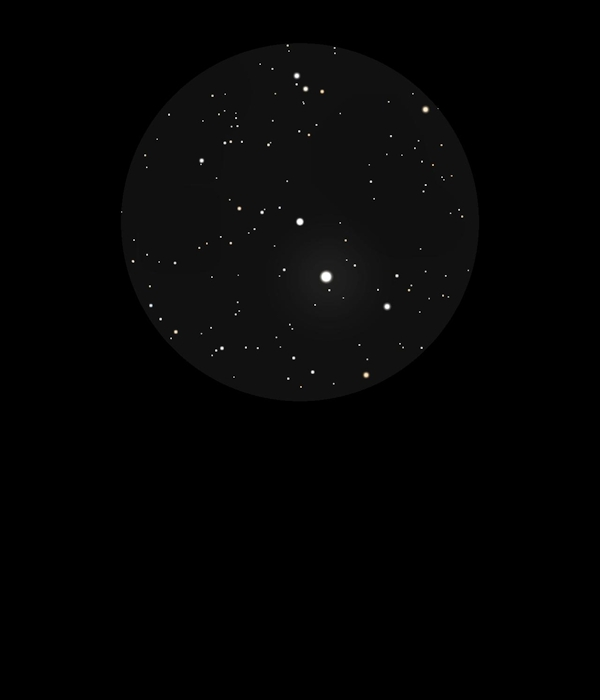

OR
Delphini
Double
Star in Delphinus
HIP 102490 A and B
Mags 7.45 and 8.25
26/08/16
I hadn't realized when observing y1 and y2 Del that sitting in
the same 12mm FOV was another great double, OR Del with HIP
102490 A at Mag 7.45 and HIP 102490 B at Mag 8.25 although they
appear nearly similar in magnitude to me
The seperation appears to be about two thirds that of y1 and y2
Del, so about 6 or 7 arcseconds
The colours also appear to be similar, white with perhaps a hint
of blue